In the Getting Started document, a new sample project is created named "Acme.PhoneBook". This document is a guide while developing your project. You should definitely read this document before starting your custom development. Since ASP.NET Zero is built on ASP.NET Boilerplate application framework, this document repeatedly refers ASP.NET Boilerplate's documentation.
Before reading this document, you should run the application and explore the user interface. This will help you to have a better understanding of concepts defined here.
The following tools are needed in order to use the ASP.NET Zero solution:
When you create and download your project, there will be a solution structure as shown below:
There are seven projects in the solution:
ASP.NET Zero solution contains four applications:
Thus, the back-end application is built in two different architectures (SPA and MPA). You can choose the one you are most comfortable with. If you just want to build a SPA, you can safely remove MPA files from your project, or vice versa.
Multi-tenancy is used to build SaaS (Software as a Service) applications easily. Wtih this technique, we can deploy single application to serve to multiple customers. Each Tenant will have it's own roles, users and settings.
All of the ASP.NET Zero's code-base is developed to be multi-tenant. But, it can be disabled with a single line of configuration if you are developing single-tenant application. If you disable it, all multi-tenancy stuff will be hidden and not available. If multi-tenancy is disabled, there will be a single tenant named Default.
There are two types of perspective in multi-tenant applications:
ASP.NET Zero uses ABP's (ASP.NET Boilerplate) data filters. Therefore it automatically filters tenant data if you properly use filter interfaces. Read multi-tenant documentation if you are building multi-tenant applications.
web.config file contains a setting, named "WebSiteRootAddress", which stores root URL of the web application:
<add key="WebSiteRootAddress" value="http://localhost:6240/" />
It's used to calculate some URLs in the application. So, you need to change this on deployment. For multi-tenant applications, this URL can contain dynamic tenancy name. In that case, put {TENANCY_NAME} instead of tenancy name like:
<add key="WebSiteRootAddress" value="http://{TENANCY_NAME}.mydomain.com/" />
Thus, AspNet Zero can automatically detect current tenant from URLs. If you configure it as above, you should also redirect all subdomains to your application. To do that;
There may be other ways of doing it but this is the simplest.
ASP.NET Zero contains front-end pages that can be a starting point for your public web site or a landing page for the application. When you first run the project, you will see the Home Page as shown below:
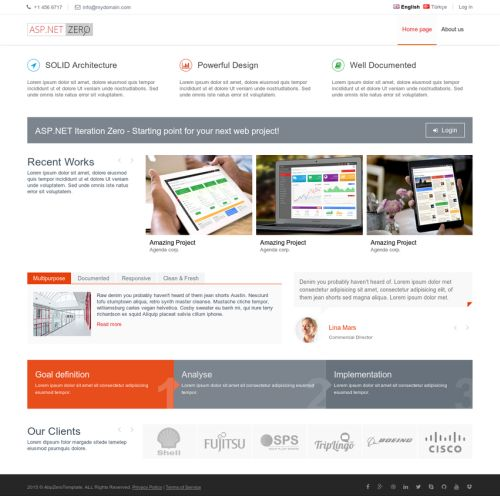
There are two pages here: Home Page and About. Content of these pages initially consists of placeholders for demo purposes that you should change. You can completely remove that content and build your page based on your needs. Also, you should change the logo with your Company's logo, of course.
See metronic front-end theme to review the myriad options and components available as part of the theme - they are an extensive resource that will enable you to more quickly build a richer web site.
Menus are defined in FrontEndNavigationProvider class. When you add a new menu item here, it will be automatically shown in the menu. There is a Login link at the top right corner. This link takes us to the Login page for the backend application.
Layout of front-end pages is located in the Views/Layout folder of the .Web project:

_Layout is the main layout file that includes scripts and styles. Language flags and the menu is rendered in _Header file. _PreFooter is not used but you can add it to the _Layout if you want.
When you click the "New tenant" link in the front end application, you can sign up to become a new tenant:

Here, you can create a new tenant. TenantRegistrationController is used to register a new tenant. Tenant registration can be enabled/disabled and settings can be changed in the settings page of the backend application.
AccountController provides login, register, forgot password and email activation pages.
Account management pages have a seperate _Layout view under Views/Account folder:

Main view for the AccountController is the Login page:
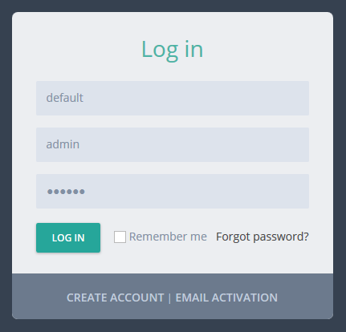
The first input is tenancy name which is shown only in a multi-tenant application and if "subdomain tenancy name detection" is not possible (See host settings section). There is a single tenant named Default in the initial database (see Entity framework section for initial seed data). Leave tenancy name input as blank to login as host.
You can use admin user name and 123qwe password when you first run the application. At first login, you should change admin password since 123qwe is not very secure:

After changing password you will be redirected to the Angular application.
ASP.NET Zero supports social media logins. To enable it, you should change the following settings in the web.config file.
<add key="ExternalAuth.Facebook.IsEnabled" value="false" />
<add key="ExternalAuth.Facebook.AppId" value="" />
<add key="ExternalAuth.Facebook.AppSecret" value="" />
<add key="ExternalAuth.Twitter.IsEnabled" value="false" />
<add key="ExternalAuth.Twitter.ConsumerKey" value="" />
<add key="ExternalAuth.Twitter.ConsumerSecret" value="" />
<add key="ExternalAuth.Google.IsEnabled" value="false" />
<add key="ExternalAuth.Google.ClientId" value="" />
<add key="ExternalAuth.Google.ClientSecret" value="" />
You can separately enable and configure each social media login option. To learn 'how to obtain social media API keys for your application', you can refer to this document or search the web (there are many resources on the web). So, we will not go to details of creating apps on social medias. Once you get your keys, you can write them into web.config. When you enable it, social media logos are shown on the login page as shown below:

Then you can click a social media icon to login with your existing account. Check Startup class to see where this configuration is used. You can add more social media options yourself.
In addition to social logins, ASP.NET Zero integrates with OpenId Connect login. It's configuration can be changed in web.config:
<add key="ExternalAuth.OpenId.IsEnabled" value="false" />
<add key="ExternalAuth.OpenId.Authority" value="" />
<add key="ExternalAuth.OpenId.ClientId" value="" />
<add key="ExternalAuth.OpenId.ClientSecret" value="" />
A logo (similar to social logos above) is shown in Login page when its enabled.
ADFS is just another external login like the social logins. In order to configure ADFS login, you just need to configure the following settings in the web.config file.
<add key="ExternalAuth.WsFederation.IsEnabled" value="false" />
<add key="ExternalAuth.WsFederation.MetaDataAddress" value="" />
<add key="ExternalAuth.WsFederation.Wtrealm" value="" />
ASP.NET Zero is ready to provide two factor login, but its disabled by default. You can easily enable it in the host settings page (on the Security tab):

Note: In a multi-tenant application, two factor authentication is available to tenants only if it's enabled in the host settings. Also, email verification and SMS verification settings are only available in the host side. This is by design.
When its enabled, the user is asked to select a verification provider after entering their name and password:

After that, a confirmation code is sent to the selected provider and the user enters the code in the next page:

This is available if the user has a confirmed email address. Since email sending is disabled in debug mode, you can see the code in logs. In release mode, email will be sent (you can change this and make emailing available in debug as well -- see the sending emails section).
This is available if the user has a confirmed phone number. Note that SMS sending is not fully implemented because it requires an integration to an SMS vendor. The current implementation just writes security codes to logs. You should complete the IdentitySmsMessageService class in the solution to make it usable. Otherwise, disable SMS verification in the settings.
As seen in the previous section, you can configure user lockout settings. Users are locked out when they enter wrong password for a specified count and duration.
When you click the "Create Account" link in the login page, a registration form is shown:

A user can be registered for a tenant, not for host if this is a multi-tenant application. If it is single-teant, there will be no tenancy name input here.
Recaptcha (security question) is optional. It uses Google's recaptcha service. Recaptcha service works per domain. So, to make it properly work, you should create your own private and public keys for your domain on https://www.google.com/recaptcha and replace the keys in the web.config file.
When a user registers as shown above, an email confirmation code is sent to their email address. If user did not receive this email for some reason, he can click Email activation and re-send the confirmation code.

Again, Tenancy name input is not shown for a single-tenant application or when tenant name is known via subdomain (like tenancyname.mydomain.com).
If a user forgots their password, they can click the "Forgot Password" link and will then be sent an email to reset their password.

The backend in ASP.NET Zero is a single page AngularJs application. When you login, you are redirected to the ApplicationController. It returns the layout view of the application.
All view, script and styles files are located in App folder (not all folders/files are not shown here):

There are three main folders here:
Given a view, directive, service, image -- used by both tenants and host -- it should be placed under the common folder as shown above. You should place the tenant or host specific directives, services, etc. under their own folder, not in the common folder. If you are developing a single-tenant application, you can place your files under the tenant section.
Application's main menu is defined in the AppNavigationProvider class. See ABP's navigation documentation to get a deep understanding on creating menus.
app.js is the entrance point of the application. You define the app angular module and angular routes in this file. Angular ui-router is used for routing. Routes (states in ui-router) are dynamically defined based on the current user's permissions (see authorization section). Example:
if (abp.auth.hasPermission('Pages.Administration.Tenant.Settings')) {
$stateProvider.state('tenant.settings', {
url: '/settings',
templateUrl: '~/App/tenant/views/settings/index.cshtml',
menu: 'Administration.Settings.Tenant'
});
}
Conditional routing definition prevents users from accessing an unauthorized page by simply entering a URL into the browser's address bar. Menu definition helps us to highlight the appropriate menu item when this route is activated.
As you see, .cshtml files are used for views. While .html files can be used, using .cshtml files allows us to take advantage of Razor's power when creating views.
Layout of the application is located under common/views/layout folder. All scripts and styles in the App folder (and subfolders) are bundled (see AppBundleConfig class). Any scripts and styles that you place there will be automatically added to the layout.

Layout consists of different parts as shown above. The main menu is rendered in sidebar.
If you're not developing a multi-tenant application, you can skip this section.
Most SaaS (multi-tenant) applications have editions (packages) which contain different feature sets. That us how they can provide different price and other options to their tenants (customers). Editions page (available in host login) is used to manage an application's editions:

Editions are used to group feature values and assign to tenants. When you click Actions/Edit for an edition, you can see the assigned features for that edition:

The startup project only contains the Chat feature (and it's wto sub-features) and they can be enabled/disabled per edition/tenant. All features are defined in AppFeatureProvider class. Feature values are stored in the AbpFeatures table. Features are not restricted to boolean (enabled/disabled) values and can contain different types of values as shown below:
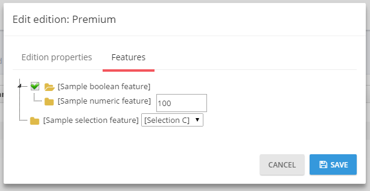
See feature management and edition management documents for more information.
If you're not developing a multi-tenant application, you can skip this section.
If this is a multi-tenant application and you logged in as a host user, then tenants page is shown:

A tenant is represented by the Tenant class. The Tenant class can be extended by adding new properties. Initially, there is only one tenant, named Default. Tenancy Name (code name) is the unique name of a tenant. A tenant can be active or passive. If it is passive, users associated with this tenant cannot login to the application.
When you click the "Create new Tenant" button, a dialog is shown:

Tenancy name should be unique and not contain spaces or other special chars since it may be used as the subdomain name (e.g. tenancyname.mydomain.com -- see the section below). Name can be anything. Admin email is used as the email address of the admin user of the new tenant. Admin user is automatically created with the tenant. You can set a random password for admin and send an activation email. When the user first logs in, he/she should change the password. You can uncheck this to enter a known password.
When you create a new tenant, you should select/create a database to store the new tenant's data. You can select 'Use host database' to store tenant data in host database (can be used for single database approach) or you can specify a connection string to create/use a dedicated database for the new tenant. AspNet Zero supports a hybrid approach. That means you can use host database for some tenants and create dedicated databases for other tenants. You can even group some tenants in a separated database.
All tenant actions are handled by the TenantAppService class. Example (deleting a tenant):
[AbpAuthorize(AppPermissions.Pages_Tenants_Delete)]
public async Task DeleteTenant(EntityRequestInput input)
{
var tenant = await TenantManager.GetByIdAsync(input.Id);
CheckErrors(await TenantManager.DeleteAsync(tenant));
}
TenantAppService mostly uses TenantManager domain service for tenant operations.
An edition can be assigned to a tenant during tenant creation or by editing the tenant. The tenant will inherit all features of the assigned edition. You can also override features and values for a tenant. Click actions/change features for a tenant to customize its features:

As a host user, you may want to perform operations on behalf of a tenant. In that case, you can click the Actions button of a tenant and select "Login as this tenant" option:

When you click it, you see a modal to select a user of the tenant. You can select any user and perform such operations as that user is allowed. See User Impersonation section in this document for more information.
A multi-tenant application generally uses subdomains to identify current tenant. tenant1.mydomain.com, tenant2.mydomain.com and so on. ASP.NET Zero automatically identifies and gets the tenant name from the subdomain (see host settings section).
Organization units (OU) are used to hierarchically group users and entities. Then you can get user or entities based on their OUs. When you click Administration/Organization units, you go to the related page:

Here, you can manage OUs (create, edit, delele, move) and members (add/remove).
OrganizationUnitManager is used to manage OUs, UserManager is used to manage OU members in the code. OrganizationUnitAppService performs the application logic.
In the left OU tree, you can right click to an OU (or left click to arrow at the right) to open context menu for OU operations. When you try to add a member, a modal is shown to select the user:

This is actually a generic lookup modal and can be used to select any type of entity (see App/common/views/common/lookup.js and corresponding view). To select the users, you create a FindUsers method in CommonLookupAppService then configure the modal to work with that method (see organizationUnits/index.js file for usage of lookupModal.open).
See organization unit management document for more information.
When you click Administration/Roles menu, you go to the role management page:

Roles are used to group permissions. When a user has a role, then he/she will have all permissions of that role.
A role is represented by the Role class. The role class can be extended by adding new properties.
RoleManager performs domain logic; RoleAppService performs application logic for roles.
Roles can be dynamic or static:
One or more roles can be set as default. Default roles are assigned to newly added/registered users as default. This is not a development time property and can be set or changed after deployment.
In the startup project, you have a static admin role for the host (for multi-tenant apps). Also, you have a static admin and user roles for tenants. Admin roles have all permissions granted by default. User role is the default role for new users and has no permissions by default. These can be changed easily. See StaticRoleNames class for all static roles and AppRoleConfig for changing static roles.
Since roles are used to group permissions, you can set permissions of a role while creating or editing as shown below:

(not all permissions are shown in the figure above)
Every tenant has its own roles and any change in roles for a tenant does not affect other tenants. Also, host has its own isolated roles.
When you click on the Administration/Users menu item, you go to the user management page:

Users are people who can login to the application and perform some operations based on their permissions.
User class represents a user. User class can be extended by adding new properties.
UserManager is used to perform domain logic; UserAppService is used to perform application logic for users.
A user can have zero or more roles. If a user has more than one role, he inherits union of permissions of all the roles assigned to him/her. Also, you can set user-specific permissions. A user specific permission setting overrides role settings for this permission. A screenshot of user permission dialog (not all permissions are shown here):

(not all permissions shown in the figure above)
A dialog is used to create/edit a user:

You can change user's password, make him active/passive and so on. A user can have a profile picture. It can be changed by the user (see User Menu section). Admin user cannot be deleted as a business rule. If you don't want to use admin, you can make it passive.
As admin (or any allowed user), you may want to login as a user and perform operations on behalf of that user, without knowing their password. Click Actions button for any user and select "Login as this user":

When you click it, you are automatically redirected and logged in as this user. This is called "user impersonation". When you impersonate a user, a "back to my account" option is added to the user profile menu:

In an impersonated account, you can only perform operations that that user is allowed to do. That means everything works exactly the same as if that user logged in themself. The only difference is that audit logs will indicate that operations are performed by somebody else. Note that also a red 'back' icon is shown close to the username to indicate that you are currently impersonating another user.
Impersonation is done in AccountController of the Web project.
The language management page is used to manage (add/edit/delete) application languages and change localized texts:

You can create new language, edit/delete an existing language and set a language as default. When you click to Change text for any language, you are redirected to a new view to edit language texts:
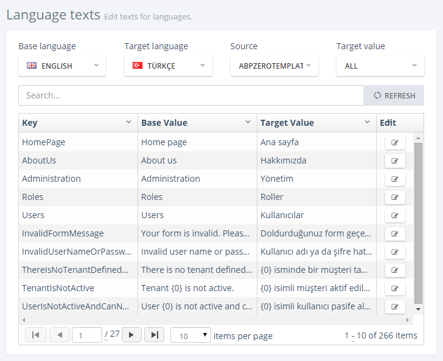
You can select any language as a base (reference) and change the target language's texts. Since there may be different localization sources, you select the source to translate. When you click the edit icon, you can see the edit modal for the selected text:
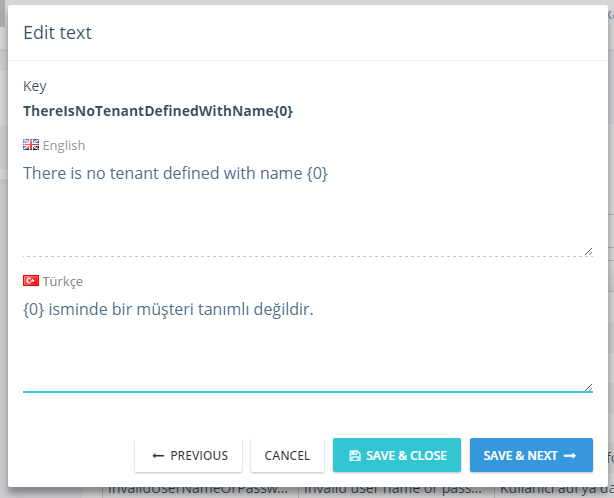
Host users (if allowed) can edit languages and localized texts. These languages will be default for all tenants for a multi-tenant application. Tenants inherit languages and localized texts and can override localized texts or can add new languages.
Both pages use the LanguageAppService class as application service. It has methods to manage languages and localized texts. The IApplicationLanguageManager and IApplicationLanguageTextManager interfaces are used to perform domain logic (as used by LanguageAppService).
See language management documentation for more information.
The audit logs page displays all user interactions with the application:

All application service methods and MVC controller actions are automatically logged and can be viewed here. See audit logs documentation to learn how to configure it. When you click the magnifier icon, you can see all details for an audit log entry:

The audit log report is provided by the AuditLogAppService class.
The host settings page is used to configure some system settings:
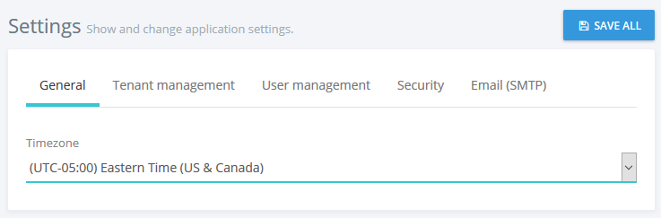
Timezone is an important setting on this page. AspNet Zero can work in multiple timezones. While it's easy to change, default startup solution does not enable UTC datetimes. See timing document to know how to change.
When you switch to UTC datetime, all DateTimes are stored as UTC by default, but each user can see dates and times in his own time zone. Timezone setting on this page allows you to set a default time zone for the application including all tenants and users. Tenants and users can change the time zone in their own settings.
On the host settings page, there are also other settings. The "SAVE ALL" button saves all settings in one click. HostSettingAppService is used to retrieve and save settings (see setting provider section for more information).
The Security tab on the host settings page contains password complexity settings. The host can define system wide password complexity settings on this tab. Each tenant can override this setting on the tenant settings page. PasswordComplexityChecker class is responsible for checking if a password satisfies the password complexity settings.

In a multi-tenant application, tenant settings are shown as below:

If you disable multi-tenancy, some host settings are also shown on this page (since there is no host setting page). Tenants can also define password complexity settings for their users or they can use password complexity settings defined by the host user.
The TenantSettingAppService is used to get/set tenant settings.
LDAP (Active Directory) Authentication is disabled by default. To make it work, you should disable multi-tenancy since LDAP auth is not used in a multi-tenant system normally. In CoreModule class in .Core project, you should enable the following line:
Configuration.Modules.ZeroLdap().Enable(typeof(AppLdapAuthenticationSource));
Then you can see the LDAP settings section on the settings page:

You can check "Enable LDAP Authentication" to enable it. If the server works in domain mode and the application runs with a domain user or local system, then generally there is no need to set the domain name, user, and password. You can logout and then login with your domain user name and password. If not, you should set this information.
The maintenance page is only available to the host and is shown below:

On the Caches tab you can clear some or all caches. Clearing caches may be needed if you manually change the database and want to refresh the application cache. CachingAppService is used to clear caches on the server side.
Website Logs tab is used to see and download logs:

WebLogAppService is used to get logs from server.
ASP.NET Zero startup project also includes a sample dashboard. It is just for demo purposes, you can use it as a starting point for your actual dashboard:

Here, only Member Activity graph data is retrieved from server (from TenantDashboardAppService). You can click the refresh button to generate random graphs.
Notification icon is located next to the language selection button. The number in the red circle shows the unread notification count.
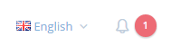
A user can see three recent notifications by clicking this icon.

A user can mark all notifications as read by clicking the "Set all as read" link or can mark a single notification by clicking the "set as read" link next to each notification.
"Settings" link opens notification settings dialog.

In this dialog there is a global setting for the user to enable/disable receiving notifications. If this setting is enabled, then the user can enable/disable each notification individually.
You can also define your custom notifications in the AppNotificationProvider class. For example, a new user registration notification is defined in the AppNotificationProvider as below.
context.Manager.Add(
new NotificationDefinition(
AppNotificationNames.NewUserRegistered,
displayName: L("NewUserRegisteredNotificationDefinition"),
permissionDependency: new SimplePermissionDependency(AppPermissions.Pages_Administration_Users)
)
);
See notification definitions section for detailed information.
The AppNotifier class is used to publish notifications. The NotificationAppService class is used to manage application logic for notifications. See notifications documentation for detailed information.
All notifications connected to the user are listed on this page.

The chat icon is located next to the user's profile image on the top right corner of the page. The number in the red circle shows the total unread chat message count.

When user clicks this icon, a chat panel appears on the right of page. This panel contains a list of friends of the user and a list of blocked users.
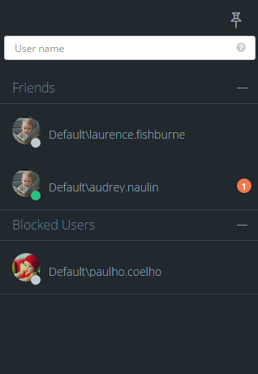A user can add new friends by writing their username(s) into the username textbox above the friend list. If the "Chat with other tenants" feature is enabled for the tenant, users of other tenants can be added as a friend by writing [tenancy name]\[user name] (ex: Default\admin). If the "Chat with host users" feature is enabled, host users can be added as friends by writing .\[user name] in the same textbox.
Online friends/users have a green circle on their profile image; offline friends/users have a gray circle.
A user can pin or unpin the chat panel by clicking the pin icon on the top right corner of the chat panel. The application will remember the last state of chat panel and restores it when the user logs in to application.
When a friend/user is selected, the conversation panel is opened.

A user can block or unblock thier friends/other users in this area. There is a wrench icon to the right of the selected user's username. This icon opens an action menu that contains "block user" or "unblock user" actions according to the target user's block status.
Chat messages are distributed via the ChatHub SignalR hub class which uses the ChatMessageManager domain class.
The ChatUserStateWatcher class is responsible for watching online/offline state changes of chat users. When a user's status changes from online to offline, or vice-versa, this class catches the state change and notifies friends of the related user.
The FriendshipAppService and the FriendshipManager classes are responsible for managing friendship requests. Chat messages from blocked users are not delivered to target users.
Since chat is a real time operation, the application caches friends of online users and unread message count from each friend. The UserFriendsCache class manages these caching operations.
The UserFriendCacheSyncronizer class is responsible for keeping the user friends cache up to date. In order to do that, it watches some events of the Friendship and ChatMessage entities.

There are three chat features in the system. These are "Chat", "Chat with host", "Chat with other tenants". These features can be enabled/disabled per edition/tenant. By using these features the host can enable/disable chat with other tenant's users or host users.
A user can click his name at the top right corner to open the user menu:

Linked accounts are used to link multiple accounts to each other. A user can easily navigate through his/her accounts using this feature.
A user can link new accounts or delete already linked accounts by clicking the "Manage accounts" link.

In order to link a new account, a user must enter the login credentials of the related account.

The UserLinkAppService class is used to manage application logic for account linking; the UserLinkManager class is used to manage domain logic for account linking.
My settings is used to change user profile settings:
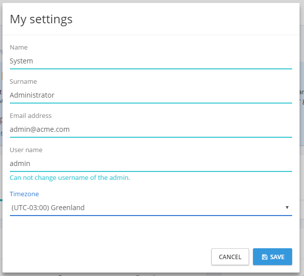
As shown here, the admin user name cannot be changed. It's considered a special user name since it's used in the database migration seed. Other users can change their usernames. ProfileAppService is used to get/change settings.
All login attempts (success or failed) are logged in the application. A user can see the last login attempts for his/her account. The UserLoginAppService is used to get login attempts from server.

A user can change their own profile picture. ProfileController is used to upload and get user profile pictures. The Angular file upload module used to select and upload a profile picture to the server. Currently, jpg/jpeg, gif and png files are supported, you can extend this to allow additional file extensions.
ProfileAppService is used to change password.
AccountController is used to logout the user and redirect to the Login page.
The same backend application is also available as a MPA using ASP.NET MVC, Web API and jQuery. All functionallity is identical with the SPA Angular application. It uses the same application services to perform actions. This is a screenshot from the application:

Since all functionallity is identical, you can read the SPA section above to understand the application. A few differences in setup are explained below.
This application is included in the .Web project as a separated Area as shown below:

This is a classic MVC folder structure with Controllers, Models and Views.
Application's main menu is defined in the MpaNavigationProvider class. See ABP's navigation documentation to get a deep understanding on creating menus.
Layout of the application is located under Views/Layout folder.

The header, footer and siderbar are developed as partial views.
AspNet Zero includes a tool, Migrator.exe, to easily migrate your databases. You can run this application to create/migrate host and tenant databases.

This application gets the host connection string from its own .config file. It will be the same in the web.config at the beginning. Be sure that the connection string in the config file is the database you want. After getting host connection sring, it first creates the host database or applies migrations if appropriate. Then it gets the connection strings of the tenant databases and runs migrations for those databases. It skips a tenant if it has not a dedicated database or its database is already migrated for another tenant (for shared databases between multiple tenants).
You can use this tool on development or production to migrate databases on deployment, instead of EntityFramework's own Migrate.exe (which requires some configuration and can work for single database in one run).
Both SPA and MPA application use AJAX extensively to provide a better user experience. They call application service methods via AJAX. Thus it is necessary to create web API controllers as adapters (A Client calls Web API Controller action via AJAX, then it calls application service method).
The ABP framework automatically creates a dynamic web API layer using the application service interface definitions. There is no web API Controller actually. You build dynamic web api controllers in PhoneBookWebApiModule class in .WebApi project. See dynamic Web API layer documentation for more information.
While ABP dynamically create Web API Controllers, you can also create regular Web API Controllers as you might normally do.
The ASP.NET Zero User Interface is completely localized. AspNet Zero uses dynamic, database based, per-tenant localization (see the related section above).
XML files are used as the base translation for desired languages:
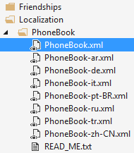
PhoneBook will be your ProjectName. You can add more XML files by copying one XML file and translate it to the desired language. Notice that the XML files should be an embedded resource. See valid culture codes.
When you are adding a new localizable text snippet, add it to the XML file of the default language then use it in your application. You should also add translated values to the corresponding XML files. It is not necessary to add it to the database migration code since the value in the XML file will be used as default.
Application languages are defined in the DefaultLanguagesCreator class. This is used as a seed data in Entity Framework Migration. So, if you want to add a new language, just add it to the DefaultLanguagesCreator class. Also, you can add a corresponding XML file as described above as default translation.
See localization and language management documentations for more information.
The ASP.NET Zero template uses EntityFramework code-first and migrations. PhoneBookDbContext (YourProjectDbContext for your project) defines the DbContext class. Migrations folder contains the EF migrations.
The PhoneBookRepositoryBase class is the base class for your custom repositories. See entity framework integration documentation for more information.
The authorization system is based on permissions. AppPermissions contains constants for permission names and the AppAuthorizationProvider class defines all permissions in the system. You should define a permission here before using it in the application layer.
See authorization documentation to learn how to configure permissions.
AppFeatureProvider class defines features of the application for multi-tenant applications. Feature names are defined in the AppFeatures class as constants.
See feature management documentation to learn how to define and use features.
Every setting has a unique name. Setting names are defined in the AppSettings class as constants. All settings and their default values are defined in the AppSettingProvider class.
See setting documentation to learn how to create and use settings.
Menus are automatically generated using definitions in the AppNavigationProvider class. You have two menus: Main (the main menu in the Angular application) and FrontEnd (main menu in the front-end web site).
See navigation documentation for more information.
ASP.NET Zero uses in-memory caching but it's ready to use Redis as a cache server. If you want to enable it, just uncomment the following line in your WebModule (in App_Start folder in your .Web project):
Configuration.Caching.UseRedis();
Redis server should be running to be able to use it. See caching documentation for more information.
ABP framework contains a background job system with a default background job manager. If you want to use Hangfire as your background job manager, you can easily enable it.
First, uncomment these lines in WebModule (in App_Start folder in your .Web project):
Configuration.BackgroundJobs.UseHangfire(configuration =>
{
configuration.GlobalConfiguration.UseSqlServerStorage("Default");
});
If you want to enable the Hangfire dashboard, you can uncomment the following line in Startup.cs (in App_Start folder in your .Web project):
app.UseHangfireDashboard();
Note: Hangfire creates its own tables in the database. See background job and hangfire integration documents for more information.
SignalR is properly configured and integrated in the startup template. The real time notification system uses it. You can direcly use SignalR in your applications. See SignalR integration document for more information.
ASP.NET Zero uses Log4Net for logging as default. Configuration is defined in log4net.config file in the .Web project. It writes all logs into the Logs folder of the web site as default. When you publish your project, remember to configure write permission for the Logs folder.
Check logging documentation to see how to inject ILogger and write logs.
ASP.NET Zero uses AutoMapper for DTO to Entity mappings (and other types of object-to-object mappings). You use the Abp.AutoMapper library that uses AutoMapper, which is simple and declarative.
See the DTO class that is used to transfer a tenant's editing information:
[AutoMap(typeof (Tenant))]
public class TenantEditDto : EntityDto
{
[Required]
[StringLength(Tenant.MaxTenancyNameLength)]
public string TenancyName { get; set; }
[Required]
[StringLength(Tenant.MaxNameLength)]
public string Name { get; set; }
public bool IsActive { get; set; }
}
Here, the AutoMap attribute automatically creates mapping between TenantEditDto and the Tenant classes. Then you can automatically convert a Tenant object to a TenantEditDto (and vice verse) object as shown below:
[AbpAuthorize(AppPermissions.Pages_Tenants_Edit)]
public async Task<TenantEditDto> GetTenantForEdit(EntityRequestInput input)
{
return (await TenantManager.GetByIdAsync(input.Id)).MapTo<TenantEditDto>();
}
MapTo method does mapping.
Attribute based mapping may not be sufficient in some cases. If you need to directly use Automapper API to configure your mappings, you should do it in the CustomDtoMapper class.
See Data Transfer Objects documentation for more information on DTOs.
ASP.NET Zero sends emails to users in some cases (e.g. forgot password and email confirmation). The email template is defined in the Emailing/EmailTemplates folder of .Core project (default.html). You can change the default email template by editing this file.
Email sending is disabled in DEBUG mode. This is because the development environment may not be configured properly to send emails. You can enable it if you want. It is enabled in RELEASE mode. Check the YourProjectNameCoreModule class's PreInitialize method to change it if you like.
User profile pictures are stored in the database, instead of in the file system. But it's not stored in Users table for performance reasons (Users are frequently retrieved from database, but profile pictures are rarely needed).
A general-purpose binary saving mechanism built in ASP.NET Zero: The BinaryObject entity can be used to save any type of binary objects (byte arrays). Since a profile picture can be converted to a byte array, user profile pictures are saved here.
The IBinaryObjectManager interface defines methods to save, get, and delete binary objects. DbBinaryObjectManager implements it to save binary objects in the database. For example, ProfileController uses IBinaryObjectManager to get current user's profile picture from the database.
You can create a different implementation of the IBinaryObjectManager interface to store files in another destination.
It's common to use the soft-delete pattern which is used to not delete an entity from the database but only mark it as 'deleted.' Thus, if an entity is soft-deleted, it will not be accidently retrieved into the application. ABP's data filters make this happen automatically.
In ASP.NET Zero, most entities are soft-deleted. See ABP's data filter documentation for more information about.
ASP.NET Zero uses ASP.NET Optimization for bundling & minifying script and style files. Bundles are defined in different files:
Also, see the ScriptPaths and StylePaths classes. They contain constants for locations of JS and CSS files.
There are some useful base classes used in the application:
It's strongly recommended to inherit one of these classes since they really make Logging, Localization, Authorization, etc. easier.
ABP framework simplifies and automates CSRF protection as much as possible. AspNet Zero template comes with CSRF protection pre-configured and working out of the box. For more information please see ABP's XSRF-CSRF-Protection documentation
The AppVersionHelper class is used to define the current version of the application in a single place. When you change the Version here, all projects in the application will be verisoned. Also, the version and release date are automatically shown in the bottom left corner on the application pages. That way you can always see the running application version.
AspNet Zero uses cookie based authentication for browsers. However, if you want to consume Web APIs or application services (those are exposed via dynamic web api) from a mobile application, you probably want a token based authentication mechanism. AspNet Zero includes bearer token authentication infrastructure. AccountController in .WebApi project contains an Authenticate action to get the token. Then you can use the token for subsequent requests.
Here, Postman (chrome extension) will be used to demonstrate requests and responses.
Just send a POST request to http://localhost:6234/api/Account/Authenticate with Context-Type="application/json" as shown below:
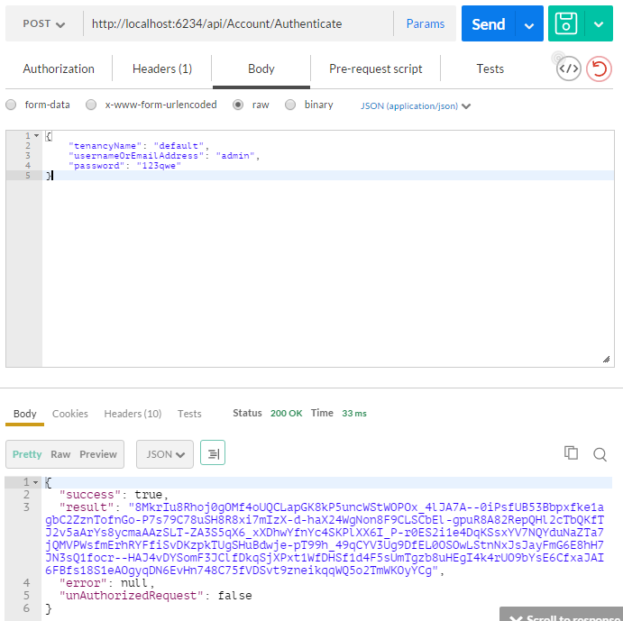
We sent a JSON request body includes tenancyName, userNameOrEmailAddress and password. tenancyName is not used to authenticate as a host user. As seen above, result property of returning JSON contains the token. You can save it and use for subsequent requests.
After authenticating and getting the token, you can use it to call any authorized actions. All application services are available to be used remotely. For example, you can use the User service to get a list of users:

Just made a POST request to http://localhost:6234/api/services/app/user/GetUsers with Content-Type="application/json" and Authorization="Bearer your-auth-token". Request body was just empty {}. Of course, request and response body will be different for different APIs.
Almost all operations available in the UI are also available via the Web API (since the UI uses the same Web API) and can be easily consumed.
Swagger UI is integrated into ASP.NET Zero. The Swagger UI configuration is located in the WebApiModule class in the WebApi project. You can browse the Swagger UI under "/swagger/ui/index".

The ASP.NET Zero startup project contains unit and integration tests. Tests are developed using the following tools:
Tests cover the Domain (core) and Application layers of the project. Open Test Explorer (Test\Windows\Test Explorer in VS main menu) to run unit tests:

These unit tests are a guide to understand the code. Also, they can be a model while writing your own unit tests for your application's functionality.
All unit test classes (actually they are integration tests since they work integrated to ABP, EntityFramework, AutoMapper and other libraries used -- up to application layer) are derived from AppTestBase. It initializes ABP system, mocks the database using Effort, creates the initial test data and logs in to the application for each of the tests. It also provides some useful common methods for all tests.
Here is a sample unit test from the application:
public class UserAppService_Delete_Tests : UserAppServiceTestBase
{
[Fact]
public async Task Should_Delete_User()
{
//Arrange
CreateTestUsers();
var user = await GetUserByUserNameOrNullAsync("artdent");
user.ShouldNotBe(null);
//Act
await UserAppService.DeleteUser(new IdInput<long>(user.Id));
//Assert
user = await GetUserByUserNameOrNullAsync("artdent");
user.IsDeleted.ShouldBe(true);
}
}
It creates some users to test and then verifies there is a user named "artdent". Then it calls the DeleteUser method of the user application service (which is being tested). Finally, it checks if the user is deleted. Here, the User is a Soft Delete entity, so its IsDeleted property must be true if it is deleted.
You can read this article to understand unit testing better.
Email Settings
If you don't configure email settings, some functions may not work (Like new tenant registration).
Publishing ASP.NET Zero is not different than any other solution. You can use Visual Studio as normally you do.
Many open source frameworks and libraries are used to build ASP.NET Zero project. Here is a list of all libraries: